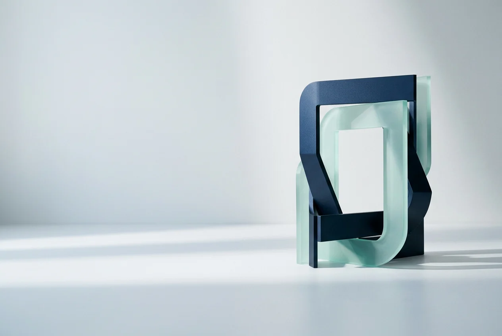

FIG 04 · WHY NESTLANCER
Engineered for delivery, not marketplace noise.
PRODUCT STUDIO × CLIENT PORTAL
THE CASE, IN SIX PARTS01—06 / ONE OPERATING APPROACH
Milestone payouts
₹4.2LIllustrative homepage proof copy, not a verified payout total.Razorpay milestones — deposit, mid, final.
Reply under 2m
Typical studio response on active threads.
Illustrative homepage proof copy, not a response-time guarantee.Fixed-price only
No hourly fog. Scope locks on accept.
Command density
Search jumps across Hub, quotes, pay.
Deliverable gates
Payment gates tied to approvals.
Selective intake
Quality over volume — scoped studio work.